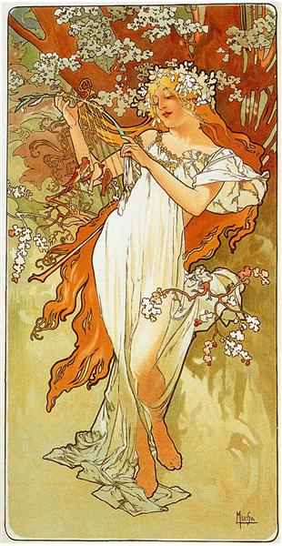

UN ESPACIO PARA EL ARTE Y LA INSPIRACIÓN
ART GALLERY
DREAMS
Donde la belleza trasciende el tiempo y cada obra cuenta una historia.
EXPLORAR GALERÍA
BIENVENIDOS
El arte de lo cotidiano
Una colección de artistas que transforman ideas, emociones y experiencias en imágenes que cuentan historias. Un espacio donde cada pincelada, cada forma y cada color nos invita a descubrir nuevas maneras de contemplar el mundo.
DESCUBRÍ
El arte que nos inspira
Detrás de cada obra existe una mirada única. Explorá nuestra selección de creaciones y descubrí las historias, emociones y pensamientos que dieron vida a cada una de ellas.
CONOCER LAS OBRAS →Una mirada hacia la belleza de la naturaleza
"El arte es el reflejo de aquello que las palabras no pueden expresar."
ART GALLERY DREAMS